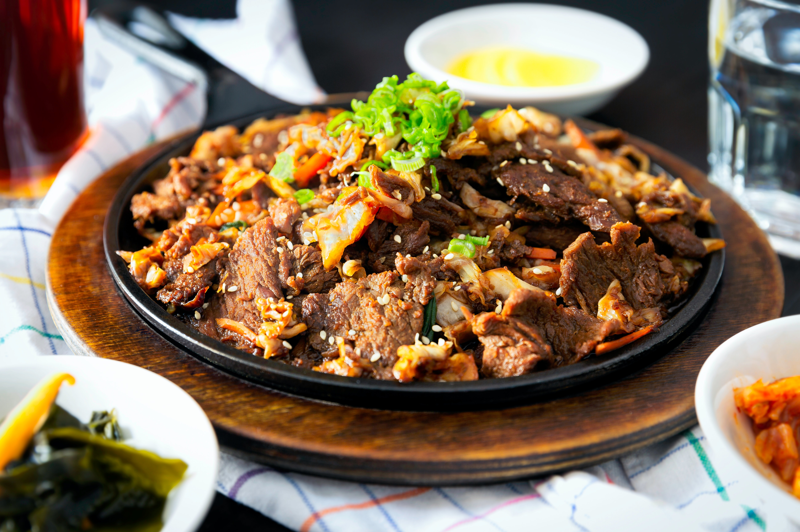

Kenyan Recipes
Chicken stew
The chicken is delicacy all across Kenya.Here's how to prepare it

Ingridients
- kienyeji chicken
- Garlic
- ginger
- onion
- tomatoes
- salt to test
- C.oil
Procedure
- boil the chicken with salt,garlic till tender
- In pan heat C.oil till hot
- Add your boilled chicken in batches.fry till brown
- In a sufuria fry onion till it starts browning
- Add in your chicken and star
- Add blended tomatoes and cover the sufuria
- cook under lo heat till tomatoes are fully cooked
- Add litle water.Let it simmer for some minutes
- carnish with dhania
©- 2021-Kenyan meals
crafted with ♥by sharon Ademba